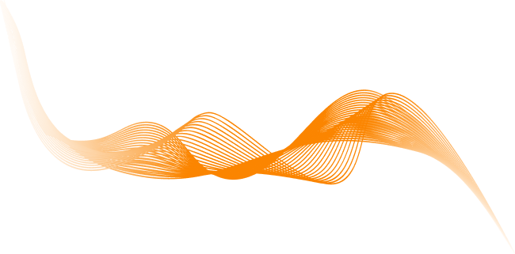

Tema 3
Grundlæggende UI/UX

Formålet med temaet grundlæggende UX/UI, var at få en forståelse for samspillet mellem brugere og brugergrænseflader, og lære værktøjer og metoder til research og design af et produkt. I dette undervisningsforløb lærte vi forskellige UX-metoder, at præsentere sit produkt og formidle research og test af produktet. Vi fik præsenteret nogle af de tests, som er vigtige af benytte i sin proces til at udvikle et design og produkt.
Som øvelse til Figma, designstile og UI-konventioner, lavede jeg stiløvelse med agurker i futuristisk stil. Her øvede jeg værktøjer i Figma. Opgaven lød på at researche sin valgte stil (postmodernistisk, retro design og futuristisk), og begrunde hvordan ens design er udarbejdet efter stilen.
Der er brugt gestaltlov om lighed i menuen øverst, og i footeren nederst, samt ikonerne med lokation, pick up date og car booking. Typografien er svær at læse i brødteksten, hvilket understreger det futuristiske, da det virker datatungt og intelligent.
Grundet mit futuristiske designvalg andvendte jeg 3D glitch illustrationer, der giver en følelse af sci-fi og teknologi, og de er samtidig et funktionsløst element.
Billedekompositionen er designet så billederne fylder meget og tager opmærksomhed.
Præsentationsvideo af mit emnesite
Mit produkt er et website henvendt til folk, der vil lære at fotografere analogt, og jeg ville lave et site, hvis design afspejlede analog fotografering.
Mit website er designet ud fra stilen digital modernistisk, og indeholder store, lækre billeder. Der er fotografier og ikke illustrationer, hvilket også lægger sig mere op af modernistisk stil end avantgarde. Farverne bruges til at understrege funktionen og der er struktur og orden i layoutet.
Jeg udviklede mine færdigheder for HTML og CSS, hvor jeg kæmpede med at sætte mit site op, som jeg havde designet det i Figma. Her lærte jeg meget af de problemer, jeg stødte på, for hvordan man implementerer sit design til website i CSS. Jeg fik færdigheder og viden for research og testmetoder til et produkt, og lavede løbende mit design om, med udgangspunkt i resultaterne fra trunktest, tænke-højt test, heuristisk test og interview af en potentiel bruger. Derved blev websitet nemmere at navigere rundt i.
Opgaven lærte mig især at blive mere struktureret i Visual Studio Code, fordi jeg i høj grad var alt for specifik, og havde for meget kode, som blev rodet og uoverskueligt. I de næste projekter, havde jeg fokus på at lave nogle flere overordnede regler og grids der kan bruges til flere containers, og generelt færre classes og CSS egenskaber til hvert enkelt HTML element.